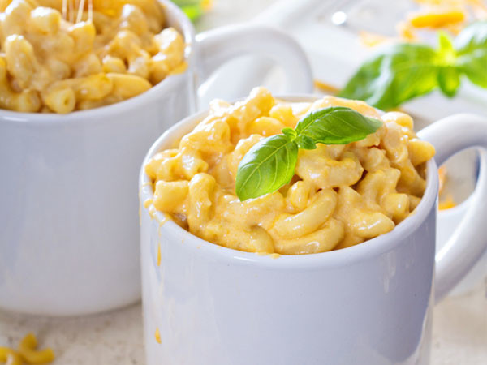
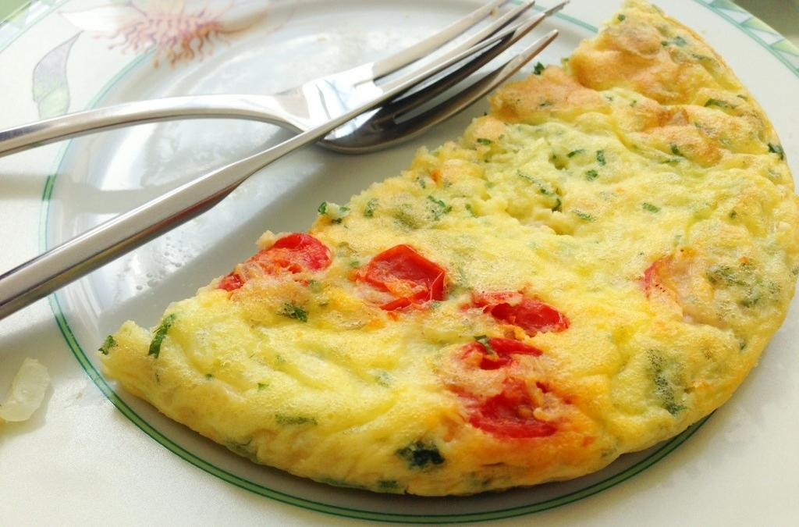

Cafés da Manhã
Deliosos cafés da manhã com rápido tempo de preparação.

Macarrão na Caneca
Macarrão prático no copo, delicioso e simples.

Omelete
Omelete preparada em minutos no micro-ondas.

Sanduíche
Pão, queijo e presunto: rápido e saboroso.

Salada Rápida
Salada fresca e saudável, pronta em minutos.